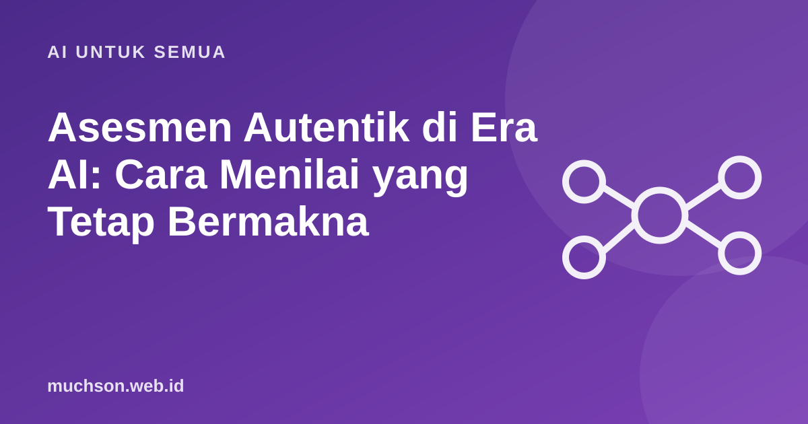

Beranda › Artikel › AI untuk Semua
AI untuk SemuaAsesmen Autentik di Era AI: Cara Menilai yang Tetap Bermakna
Tugas "tulis esai 1.000 kata tentang dampak media sosial" kini bisa diselesaikan AI dalam 20 detik. Itu bukan berarti esai tidak lagi berguna, melainkan tanda bahwa produk akhir saja tidak cukup sebagai bukti belajar. Asesmen perlu bergeser untuk melihat proses berpikir, penerapan pada konteks nyata, dan kemampuan menjelaskan.

Apa itu asesmen autentik?
Asesmen autentik meminta peserta menerapkan pengetahuan pada tugas yang mirip dunia nyata, dengan audiens, batasan, dan kriteria yang realistis. Grant Wiggins, salah satu tokohnya, menekankan bahwa tugas autentik menuntut penilaian dan inovasi, bukan sekadar mengulang informasi.
Desain ulang tugas: sebelum dan sesudah
Lima strategi yang tahan terhadap AI
Gunakan rubrik yang menilai berpikir
| Kriteria | Berkembang | Cakap | Mahir |
|---|---|---|---|
| Pemakaian bukti | Mengutip tanpa menghubungkan | Menghubungkan bukti ke klaim | Menimbang bukti yang bertentangan |
| Penerapan pada konteks | Umum, bisa untuk tempat mana pun | Spesifik pada kasus | Spesifik dan mempertimbangkan batasan nyata |
| Penjelasan lisan | Membaca ulang tulisan | Menjelaskan dengan kata sendiri | Menjawab pertanyaan "bagaimana jika" dengan tepat |
| Refleksi pemakaian AI | Tidak ada | Menyebutkan pemakaian | Menilai kelebihan dan kesalahan hasil AI |
Jangan lupakan asesmen formatif
Asesmen yang paling berharga sering tidak dinilai sama sekali: kuis singkat tanpa nilai, tiket keluar di akhir pertemuan, atau latihan yang langsung diberi umpan balik. Ketika taruhannya rendah, alasan untuk menyerahkan pekerjaan ke AI juga berkurang.
Asesmen yang dirancang ulang membutuhkan waktu menilai lebih banyak. Mulailah dari satu tugas utama per semester, bukan semua sekaligus.
Tanya jawab
Apakah ujian tertulis di kelas masih perlu?
Bagaimana menilai kelas besar dengan ujian lisan?
Apakah AI boleh dipakai untuk menilai?
Sumber dan bacaan lanjut
- Wiggins (1990): The Case for Authentic Assessment
- Membuat aturan pemakaian AI di kelas (artikel terkait)
- Rubrik penilaian: cara membuat yang adil (artikel terkait)